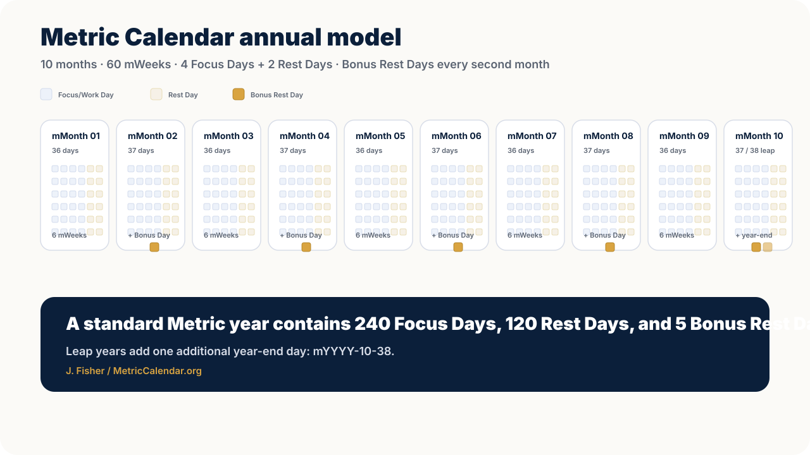

10
Numbered months
The year is divided into 10 self-contained months, alternating between 36 and 37 days.
Metric Calendar is a practical 10-month calendar framework built around focused work, predictable rest, and balanced planning.
The year is divided into 10 self-contained months, alternating between 36 and 37 days.
Each mWeek contains four Focus/Work Days followed by two Rest Days.
Every even-numbered month has one additional Bonus Rest Day outside the mWeek cycle.
Metric Calendar keeps the civil year aligned with January 1 while redesigning the internal rhythm of months and mWeeks.

Each month begins with mDay 1 and contains six complete mWeeks. The 37th day of every even-numbered month is a Bonus Rest Day, outside the regular mWeek cycle.
The technical term “Work Day” may be used in the specification. Public-facing copy uses “Focus Day” first.
Metric Calendar is not just a tidier date system. Its central proposition is that the year can be structured around focused effort, predictable recovery, and clearer planning cycles.
| Focus/Work Days | 240 |
| Regular Rest Days | 120 |
| Bonus Rest Days | 5 |
| Total | 365 |
Convert Gregorian dates to Metric dates, validate Metric dates, and see whether a date is a Focus Day, Rest Day, Bonus Rest Day, or Leap Day/New Year’s Eve.
Open converter